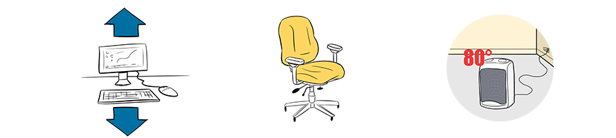

Module: Self-Advocacy
Cindy Mendelson, PhD, RN
Resources
These printouts will help you apply self-advocacy in different environments throughout your day.
Self-advocacy at home
Printout PDFSelf-advocacy at work
Printout PDFSelf-advocacy in healthcare encounters
Printout PDFMaintain a symptom binder
Keep track of your treatment, such as medications, symptoms, results from blood and diagnostic and medical tests, etc.
using a binder. A brochure you can print is available at: http://www.scleroderma.org/site/DocServer/HC-Binder-Web.pdf?docID=315
Settle on a course of action
The decision you make about the problem may be a decision that you make on your own, or it may be one that you make with others. In our current example about household chores, you decide to begin to use several of the ideas.
Your plan to reduce the problem of household work is:
- You will start purchasing more prepared foods. This includes precut salad fixings and frozen entrees.
- Once a week, your husband and children will arrange for dinner (this might include preparing dinner, ordering out, or eating out).
- Family members will prepare their own breakfast and lunch.
- You will hire a housekeeper to clean the house every other week. Your children will be responsible for vacuuming and mopping the floors in the off week.
- You will keep up with the other household chores. But you will accept that the house may not always be as neat as you would like.
- All clothing that does not need to be folded will be left in a basket in the laundry room, and family members will be responsible for pulling out their own items.
- The children will take care of their own rooms. You will accept that the rooms may be more cluttered than you would like.
Carry out the plan
How you carry out the plan will vary, depending on how complicated the plan is and who else is involved. You may need to have a family meeting to go over the details and develop a chart or mark a calendar so that everyone knows what is expected. In the beginning, it is better to be organized. For example, specify which day your husband will prepare meals and which days the children will do the floors.
Evaluate the plan
Remember, changes take time. Give the plan sufficient time to work. An important part of self-advocacy is asserting your right to the necessary changes that will allow you to have the highest quality of life. It is important that you not do activities that others forget to do. Be patient, and remind everyone of their roles. You might want to post the new family chore list for all to see.
Ask yourself these questions about the plan.
- Is it actually being carried out?
- Have you hired the housekeeper?
- Are family members doing their part?
- Are you purchasing more convenience items?
If parts of the plan are not being carried out, it is important to determine why. For example:
- Were the changes too difficult?
- Were people committed to the plan?.
The other part of evaluation is figuring out whether the plan has had the desired effect. In our example, you will want to evaluate whether the plan has reduced the amount of time you spend on household activities, and as a result, whether your pain and fatigue have improved. If the plan has been fully carried out and you are not feeling better, the plan itself may need to be reviewed.
Additional things to consider
- Maybe you need more help.
- Maybe reducing housework was not enough. For example, you may also need to evaluate how many hours you are able to work.
- Maybe your medical regimen needs to be changed.
Plans are always works in progress. Do not think of them as permanent solutions. As time passes, you may need to modify your plan. You may find that you need additional help. Or, as your family changes (for example, kids leave the home), you may not need as much help.
The example of advocating for extra help within your home should help you understand the process of building a plan. Hopefully, you will not find advocating for yourself with your family hard to do. However, it is not always easy for others to understand why they have to take on additional responsibilities.
You may also need to advocate for yourself with your physician or with your employer.
Examples of changes in the workplace include:
- A workstation that can be raised or lowered.
- An angled work surface for reading and writing, which puts less stress on your neck.
- Electric hole punchers and large grip pencils.
- An “ergonomic” chair, which is designed to be more comfortable and places less stress on your body, with armrests to support your forearms.
- More frequent breaks.
- A flexible work schedule.
- Flexible or individualized environmental controls, such as adjustable heating and air conditioning.
Examples of situations that may require self-advocacy with your physician include:
- Asking for a referral to a specialty physician, such as a pulmonologist.
- Asking for referrals to non-physician health care providers, such as an enterostomal (wound) therapist, a physical or occupational therapist, or a mental health professional.
- Asking for prescriptions for certain drugs or referrals to clinical trials.
Dealing with insurance companies. Information about appealing health insurer decisions can be found at http://www.hhs.gov/healthcare/rights/appeal/appealing-health-plan-decisions.html.
An important part of self-advocacy in health care situations is to plan for health care visits:
- Prepare a list of questions. Add question to the list between appointments.
- Maintain a symptom diary, so you can discuss changes over time, not just the things that are bothering you at the time of the meeting.
- Keep track of your treatment–such as medications, symptoms, results from blood and diagnostic and medical tests, etc.–using a binder. A brochure you can print is available at http://www.scleroderma.org/site/DocServer/HC-Binder-Web.pdf?docID=315
- Bring a friend or family member with you to appointments.
- If you are going to need extra time with your physician, make sure the office staff knows this when they schedule your appointment.